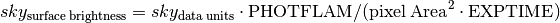
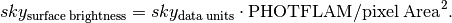

Sky matching for image mosaic.¶
A module that provides functions for matching sky in overlapping images.
| Authors: | |
|---|---|
| Mihai Cara, Warren Hack, Pey-Lian Lim (contact: help@stsci.edu) | |
| License: | |
| LICENSE | |
-
stsci.skypac.skymatch.TEAL_SkyMatch(input, skymethod='globalmin+match', match_down=True, skystat='mode', lower=None, upper=None, nclip=5, lsigma=4.0, usigma=4.0, binwidth=0.1, skyuser_kwd='SKYUSER', units_kwd='BUNIT', invsens_kwd=None, readonly=True, subtractsky=False, dq_bits=None, optimize='balanced', clobber=False, clean=True, verbose=True, logfile='skymatch.log')¶ TEAL interface for
skymatch(). Most parameters are identical to those of theskymatch(). Here we mention only the differences:Parameters: - logfile : str (Default = ‘skymatch_log.txt’)
Store execution log in this file. Always openned in append mode. If not given (
logfile=None), print to screen instead. NOTE: Unlikeskymatch(),logfilecan only be either a string file name orNone.
-
stsci.skypac.skymatch.skymatch(input, skymethod='globalmin+match', skystat='mode', lower=None, upper=None, nclip=5, lsigma=4.0, usigma=4.0, binwidth=0.1, skyuser_kwd='SKYUSER', units_kwd='BUNIT', readonly=True, subtractsky=False, dq_bits=None, optimize='balanced', clobber=False, clean=True, verbose=True, flog='skymatch_log.txt')¶ Standalone task to compute and/or “equalize” sky in input images.
Note
Sky matching (“equalization”) is possible only for overlapping exposures.
Warning
When
readonlyisFalse, image headers will be modified and image data will be background-subtracted ifsubtractskyisTrue. Remember to back up original copies as desired.Warning
Unlike previous sky subtraction algorithm used by astrodrizzle,
skymatch()accounts for differences in chip sensitivities by performing sky computations on data multiplied by inverse sensitivity (e.g., value ofPHOTFLAMin image headers – see “Notes” section below).Parameters: - input : str, list of FileExtMaskInfo
A list of of
FileExtMaskInfoobjects or a string containing one of the following:- a comma-separated list of valid science image file names
(see note below) and (optionally) extension specifications,
e.g.:
'j1234567q_flt.fits[1], j1234568q_flt.fits[sci,2]'; - an @-file name, e.g.,
'@files_to_match.txt'. See notes section for details on the format of the @-files.
Note
Valid science image file names are:
- file names of existing FITS, GEIS, or WAIVER FITS files;
- partial file names containing wildcard characters, e.g.,
'*_flt.fits'; - Association (ASN) tables (must have
_asn, or_ascsuffix), e.g.,'j12345670_asn.fits'.
Warning
@-file names MAY NOT be followed by an extension specification.
Warning
If an association table or a partial file name with wildcard characters is followed by an extension specification, it will be considered that this extension specification applies to each file name in the association table or each file name obtained after wildcard expansion of the partial file name.
- a comma-separated list of valid science image file names
(see note below) and (optionally) extension specifications,
e.g.:
- skymethod : {‘localmin’, ‘globalmin+match’, ‘globalmin’, ‘match’} (Default = ‘globalmin+match’)
Select the algorithm for sky computation:
‘localmin’: compute a common sky for all members of an exposure (see “Notes” section below). For a typical use, it will compute sky values for each chip/image extension (marked for sky subtraction in the
inputparameter) in an input image, and it will subtract the previously found minimum sky value from all chips (marked for sky subtraction) in that image. This process is repeated for each input image.Note
This setting is recommended when regions of overlap between images are dominated by “pure” sky (as opposite to extended, diffuse sources).
Note
This is similar to the “skysub” algorithm used in previous versions of astrodrizzle.
‘globalmin’: compute a common sky value for all members of all exposures (see “Notes” section below). It will compute sky values for each chip/image extension (marked for sky subtraction in the
inputparameter) in all input images, find the minimum sky value, and then it will subtract the same minimum sky value from all chips (marked for sky subtraction) in all images. This method may useful when input images already have matched background values.‘match’: compute differences in sky values between images in common (pair-wise) sky regions. In this case computed sky values will be relative (delta) to the sky computed in one of the input images whose sky value will be set to (reported to be) 0. This setting will “equalize” sky values between the images in large mosaics. However, this method is not recommended when used in conjunction with astrodrizzle because it computes relative sky values while
astrodrizzleneeds “measured” sky values for median image generation and CR rejection.‘globalmin+match’: first find a minimum “global” sky value in all input images and then use ‘match’ method to equalize sky values between images.
Note
This is the recommended setting for images containing diffuse sources (e.g., galaxies, nebulae) covering significant parts of the image.
- match_down : bool (Default = True)
Specifies whether the sky differences should be subtracted from images with higher sky values (
match_down=True) to match the image with the lowest sky or sky differences should be added to the images with lower sky values to match the sky of the image with the highest sky value (match_down=False).Note
This setting applies only when
skymethodparameter is either'match'or'globalmin+match'.- skystat : {‘mode’, ‘median’, ‘mode’, ‘midpt’} (Default = ‘mode’)
Statistical method for determining the sky value from the image pixel values. See
computeSkyfor more detals.- lower : float, None (Default = None)
Lower limit of usable pixel values for computing the sky. This value should be specified in the units of the input image(s).
- upper : float, None (Default = None)
Upper limit of usable pixel values for computing the sky. This value should be specified in the units of the input image(s).
- nclip : int (Default = 5)
A non-negative number of clipping iterations to use when computing the sky value.
- lsigma : float (Default = 4.0)
Lower clipping limit, in sigma, used when computing the sky value.
- usigma : float (Default = 4.0)
Upper clipping limit, in sigma, used when computing the sky value.
- binwidth : float (Default = 0.1)
Bin width, in sigma, used to sample the distribution of pixel brightness values in order to compute the sky background statistics.
- skyuser_kwd : str (Default = ‘SKYUSER’)
Name of header keyword which records the sky value previously subtracted (if
subtractskyisTrue) from the image data or the computed (ifsubtractskyisFalse) sky value. This keyword’s value will be updated byskymatch()(ifreadonlyisFalse).Warning
When
subtractskyisTruethenskyuser_kwdis treated as a cummulative value. That is, subtracted sky value will be added to theskyuser_kwdvalue and thusskyuser_kwdrepresents total sky subtracted from the image by the user over the entire “history” of the image. Ifskyuser_kwdis missing in the input image, “previous” sky value will be considered to be 0.0.When
subtractskyisFalsethenskyuser_kwdrepresents computed sky value and it is not treated as a cummulative value. Any previous value of theskyuser_kwdheader keyword will be overwritten with the newly computed value.Because of different meanings of the value represented by the
skyuser_kwdheader keyword depending on the value of thesubtractskyparameter, it is important to be consistent and not to mix the two modes when usingskymatch()multiple times on the same images.- units_kwd : str (Default = ‘BUNIT’)
Name of header keyword which records the units of the data in the image.
- invsens_kwd : str, None (Default = ‘’)
Name of header keyword which records the inverse sensitivity of the detector used to acquire data. For
HSTdetectors,'PHOTFLAMis proportional to detector’s inverse sensitivity. It is used to convert electron counts-like to photon counts by multiplying count-like data (or count-rates) by the value indicated by this keyword.By performing matching using photon counts (“flux units”), one can match images from heterogeneous instruments. Default value
''orNoneturns off use of inverse sensitivity.- readonly : bool (Default = True)
Report the sky matching values but do not modify the input files.
- subtractsky : bool (Default = False)
Subtract computed sky value from image data and add this value to the existing value represented by
skyuser_kwd(subtracted sky) or simply report the computed sky value in the header keyword specified byskyuser_kwd(computed sky).Warning
Because
subtractskychanges the meaning of the value of the header keywordskyuser_kwdit is important to be consistent in usingsubtractskyparameter: inconsistent use may lead to sky values reported inskyuser_kwdheader keyword that do not reflect correct sky value computed for or subtracted from flat-fielded images. A possible workaround is to use different keywords for subtracted and computed sky, keeping in mind that the order of operation will affect reported computed sky values.Also see warning for
skyuser_kwdparameter.Note
When
readonlyisTrue, reported sky values will be consistent with the setting specified bysubtractsky(as ifreadonlyisFalse), however sky values will NOT be subtracted from the image data whensubtractsky=True.Note
astrodrizzle does not subtract computed sky values from input flat-fielded images. Therefore, when using
skymatch()on images that subsequently will be processed by astrodrizzle it is recommended to use the following suggestions:- If one plans to turn on sky subtraction step in
astrodrizzle that will
involve additional sky computation (as opposite to using
astrodrizzle’sskyuserorskyfileparameters), then it is recommended to setsubtractskytoFalseand setskyuser_kwdto the default value used byastrodrizzle:MDRIZSKY. - If one wants to effectively subtract the computed sky values
from the flat-fielded image data, then it is recommended to
set
subtractskytoTrue,skyuser_kwdparameter to something different fromMDRIZSKY, (e.g.,SKYUSER), and setskyuserparameter in astrodrizzle to the same value as the values ofskyuser_kwdused in the call toskymatch().
- If one plans to turn on sky subtraction step in
astrodrizzle that will
involve additional sky computation (as opposite to using
- dq_bits : int, str, None (Default = 0)
Integer sum of all the DQ bit values from the input image’s DQ array that should be considered “good” when building masks for sky computations. For example, if pixels in the DQ array can be combinations of 1, 2, 4, and 8 flags and one wants to consider DQ “defects” having flags 2 and 4 as being acceptable for sky computations, then
dq_bitsshould be set to 2+4=6. Then a DQ pixel having values 2,4, or 6 will be considered a good pixel, while a DQ pixel with a value, e.g., 1+2=3, 4+8=12, etc. will be flagged as a “bad” pixel.Alternatively, one can enter a comma- or ‘+’-separated list of integer bit flags that should be added to obtain the final “good” bits. For example, both
4,8and4+8are equivalent to settingdq_bitsto 12.Default value (0) will make all non-zero pixels in the DQ mask to be considered “bad” pixels, and the corresponding image pixels will not be used for sky computations.Setdq_bitstoNoneto turn off the use of image’s DQ array for sky computations.In order to reverse the meaning of thedq_bitsparameter from indicating values of the “good” DQ flags to indicating the “bad” DQ flags, prepend ‘~’ to the string value. For example, in order not to use pixels with DQ flags 4 and 8 for sky computations and to consider as “good” all other pixels (regardless of their DQ flag), setdq_bitsto~4+8, or~4,8. To obtain the same effect with anintinput value (except for 0), enter -(4+8+1)=-9. Following this convention, adq_bitsstring value of'~0'would be equivalent to settingdq_bits=None.Note
DQ masks (if used), will be combined with user masks specified in the input @-file.
- optimize : {‘balanced’, ‘speed’, ‘inmemory’} (Default = ‘balanced’)
Specifies whether to optimize execution for speed (maximum memory usage - loaded masks and images are not unloaded until the end of the execution) or use a balanced approach in which a minimal amount of image data is kept in memory and retrieved from disk as needed. The ‘inmemory’ option is similar to the ‘speed’ setting except that masks are never saved to the files on a physical disk but are created in memory. The default setting is recommended for most systems.
- clobber : bool (Default = False)
When a input image file is in GEIS or WAIVER FITS format it must be converted to simple/MEF FITS file format before it can be used by
skymatch(). This setting specifies whether any existing simple/MEF files be overwritten during this conversion process. Ifclobber=False, existing simple/MEF FITS files will be opened. Ifclobber=True, input GEIS or WAIVER FITS will be first converted to simple FITS/MEF format overwritting (if necessary) existing files and then these newly created simple FITS/MEF files will be opened.- clean : bool (Default = True)
Specifies whether to delete at the end of the execution any temporary files created by
skymatch().- verbose : bool (Default = True)
Specifies whether to print warning messages.
- flog : str, file object, MultiFileLog, None (Default = ‘skymatch_log.txt’)
Log file to which messages shoul be written. It can be a file name, file object, or a MultiFileLog object. The later two allow the log to be written to an existing open output stream passed from the calling function such as astrodrizzle. Log file is always openned in append mode. If not provided (None), print messages to screen only.
Raises: - RuntimeError
Could not add an image to mosaic. Possibly this SkyLine does not intersect the mosaic.
- TypeError
The
inputargument must be either a Python list ofFileExtMaskInfoobjects, or a string either containing either a comma-separated list file names, or an @-file name.
Notes
skymatch()provides new algorithms for sky value computations and enhances previously available algorithms used by, e.g., astrodrizzle.First, the standard sky computation algorithm (see
skymethod='localmin') was upgraded to be able to use DQ flags and user supplied masks to remove “bad” pixels from being used for sky statistics computations. Values different from zero in user-supplied masks indicate “good” data pixels.Second, two new methods have been introduced:
'globalmin'and'match', as well as a combination of the two –'globalmin+match'.The
'globalmin'method computes the minimum sky value across all chips in all input images. That sky value is then considered to be the background in all input images.The
'match'algorithm is somewhat similar to the traditional sky subtraction method (skymethod='localmin') in the sense that it measures the sky indipendently in input images (or detector chips). The major differences are that, unlike the traditional method,'match'algorithm computes relative sky values with regard to the sky in a reference image chosen from the input list of images; and- Sky statistics is computed only in the part of the image that intersects other images.
This makes
'match'sky computation algorithm particularly useful for “equalizing” sky values in large mosaics in which one may have only (at least) pair-wise intersection of images without having a common intersection region (on the sky) in all images.The
'match'method works in the following way: for each pair of intersecting images, an equation is written that requires that average surface brightness in the overlapping part of the sky be equal in both images. The final system of equations is then solved for unknown background levels.Warning
Current algorithm is not capable of detecting cases when some groups of intersecting images (from the input list of images) do not intersect at all other groups of intersecting images (except for the simple case when single images do not intersect any other images). In these cases the algorithm will find equalizing sky values for each group. However since these groups of images do not intersect each other, sky will be matched only within each group and the “inter-group” sky mismatch could be significant.
Users are responsible for detecting such cases and adjusting processing accordingly.
Warning
Because this method computes relative sky values compared to a reference image (which will have its sky value set to 0), the sky values computed with this method usually are smaller than the “absolute” sky values computed, e.g., with the
'localmin'algorithm. Since astrodrizzle expects “true” (as opposite to relative) sky values in order to correctly compute the median image or to perform cosmic-ray detection, this algorithm in not recommended to be used alone for sky computations to be used withastrodrizzle.For the same reason, IVM weighting in
astrodrizzleshould not be used with'match'method: sky values reported inMDRIZSKYheader keyword will be relative sky values (sky offsets) and derived weights will be incorrect.The
'globalmin+match'algorithm combines'match'and'globalmin'methods in order to overcome the limitation of the'match'method described in the note above: it uses'globalmin'algorithm to find a baseline sky value common to all input images and the'match'algorithm to “equalize” sky values in the mosaic. Thus, the sky value of the “reference” image will be equal to the baseline sky value (instead of 0 in'match'algorithm alone) making this method acceptable for use in conjunction withastrodrizzle.
- “Surface Brightness”:
skymatch()converts “raw” sky values (in image data units) obtained directly from image data to “surface brightness”-like units and all computations are performed in these units. Computed sky surface brightness values are converted back to image data units before being subtracted from the image data and/or reported in theskyuser_kwdin the image header.This conversion from image data units to “surface brightness”-like units is necessary in order to perform correct sky computations for data from various intsruments/detectors. It accounts for differences in exposure times (if image data are in “counts” units) in each input image, differences in pixel scales of different detector chips (instruments), and detector sensitivities.
For images with data in “counts”-like units, the conversion from data units to surface brightness is given by:

and for image data in “count-rate”-like units, this conversion is given by:

- Important Header Keywords:
As discussed above,
skymatch()uses values of various keywords in image headers to perform conversion of sky values to/from data units from/to surface brightness units. The most important keywords are:BUNITdescribes the units of the image data. The units of data are determined from theBUNITheader keyword by searching its value for the division sign ‘/’. If the division sign is not found, then the units are assumed to be “counts”. If the division sign is found in theBUNITvalue and if the numerator is one of the following:'ELECTRONS','COUNTS', or'DN', and denumerator is either'S','SEC', or'SECOND', then the units are assumed to be count-rate.If
BUNITis missing then for non-HSTimages the units will be assumed to be “count-rate”, while forHSTimages (header keywordTELESCOP='HST') the'INSTRUME'and'DETECTOR'keywords will be used to infer the units. For theNICMOSinstrument,'UNITCORR'will be used to infer the units. If relevant keywords are missing, the units of image data will be assumed to be “count-rate”. Check the log file for selected units.EXPTIME– total exposure time, assumed to be in seconds. While the units ofEXPTIMEare not important for sky computation, it is important that all input images toskymatch()use the same units. This keyword is used only when inferred units for image data are “count-rates”. IfEXPTIMEis missing when image data units are counts, then variations in exposure time WILL NOT be accounted for. First, the primary header of the image file is searched forEXPTIMEand if it is not found in the primary header, then image extension is searched for the presense ofEXPTIMEkeyword.PHOTFLAM– inverse sensitivity of the detector. At firstskymatch()will try to detectPHOTFLAMin the image extension header and if not found, it will look forPHOTFLAMin the primary header. IfPHOTFLAMis not present at all, the variations in detector sensitivity WILL NOT be accounted for.
- Glossary:
Exposure – a subset of FITS image extensions in an input image that correspond to different chips in the detector used to acquire the image. The subset of image extensions that form an exposure is defined by specifying extensions to be used with input images (see parameter
input).See help for
stsci.skypac.parseat.parse_at_line()for details on how to specify image extensions.Footprint – the outline (edge) of the projection of a chip or of an exposure on the celestial sphere.
Note
- Footprints are managed by the
SphericalPolygonclass. - Both footprints and associated exposures (image data, WCS
information, and other header information) are managed by the
SkyLineclass. - Each
SkyLineobject contains one or moreSkyLineMemberobjects that manage both footprints and associated chip data that form an exposure.
- Footprints are managed by the
- Remarks:
skymatch()works directly on geometrically distorted flat-fielded images thus avoiding the need to perform an additional drizzle step to perform distortion correction of input images.Initially, the footprint of a chip in an image is aproximated by a 2D planar rectangle representing the borders of chip’s distorted image. After applying distortion model to this rectangle and progecting it onto the celestial sphere, it is approximated by spherical polygons. Footprints of exposures and mosaics are computed as unions of such spherical polygons while overlaps of image pairs are found by intersecting these spherical polygons.
- @-File Format:
A catalog file containing a science image file and extension specifications and optionally followed by a comma-separated list of mask files and extension specifications (or None).
File names will be stripped of leading and trailing white spaces. If it is essential to keep these spaces, file names may be enclosed in single or double quotation marks. Quotation marks may also be required when file names contain special characters used to separate file names and extension specifications: ,[]{}
Extension specifications must follow the file name and must be delimited by either square or curly brackets. Curly brackets allow specifying multiple comma-separated extensions: integer extension numbers and/or tuples (‘ext name’, ext version).
- Some possible ways of specifying extensions:
[1] – extension number
[‘sci’,2] – extension name and version
{1,4,(‘sci’,3)} – multiple extension specifications, including tuples
{(‘sci’,*)} – wildcard extension versions (i.e., all extensions with extension name ‘sci’)
[‘sci’] – equivalent to [‘sci’,1]
{‘sci’} – equivalent to {(‘sci’,*)}
For extensions in the science image for which no mask file is provided, the corresponding mask file names may be omitted (but a comma must still be used to show that no mask is provided in that position) or None can be used in place of the file name. NOTE: ‘None’ (in quotation marks) will be interpreted as a file named None.
- Some examples of possible user input:
image1.fits{1,2,(‘sci’,3)},mask1.fits,,mask3.fits[0]
In this case:
image1.fits[1] is associated withmask1.fits[0];image1.fits[2] does not have an associated mask;image1.fits[‘sci’,3] is associated withmask3.fits[0].– Assume
image2.fitshas 4 ‘SCI’ extensions:image2.fits{‘sci’},None,,mask3.fits
In this case:
image2.fits[‘sci’,1] andimage2.fits[‘sci’,2] andimage2.fits[‘sci’,4] do not have an associated mask;image2.fits[‘sci’,3] is associated withmask3.fits[0]
Note
User mask data that indicate what pixels in the input
imageshould be used for sky computations (1) and which pixels should not be used for sky computations (0).- Limitations and Discussions:
Primary reason for introducing “sky match” algorithm was to try to equalize the sky in large mosaics in which computation of the “absolute” sky is difficult due to the presence of large diffuse sources in the image. As discussed above,
skymatch()accomplishes this by comparing “sky values” in a pair of images in the overlap region (that is common to both images). Quite obviously the quality of sky “matching” will depend on how well these “sky values” can be estimated. We use quotation marks around sky values because for some image “true” background may not be present at all and the measured sky may be the surface brightness of large galaxy, nebula, etc.Here is a brief list of possible limitations/factors that can affect the outcome of the matching (sky subtraction in general) algorithm:
- Since sky subtraction is performed on flat-fielded but
not distortion corrected images, it is important to keep in mind
that flat-fielding is performed to obtain uniform surface brightness
and not flux. This distinction is important for images that have
not been distortion corrected. As a consequence, it is advisable that
point-like sources be masked through the user-supplied mask files.
Values different from zero in user-supplied masks indicate “good” data
pixels. Alternatively, one can use
upperparameter to limit the use of bright objects in sky computations. - Normally, distorted flat-fielded images contain cosmic rays. This
algorithm does not perform CR cleaning. A possible way of minimizing
the effect of the cosmic rays on sky computations is to use
clipping (
nclip> 0) and/or setupperparameter to a value larger than most of the sky background (or extended source) but lower than the values of most CR pixels. - In general, clipping is a good way of eliminating “bad” pixels: pixels affected by CR, hot/dead pixels, etc. However, for images with complicated backgrounds (extended galaxies, nebulae, etc.), affected by CR and noise, clipping process may mask different pixels in different images. If variations in the background are too strong, clipping may converge to different sky values in different images even when factoring in the “true” difference in the sky background between the two images.
- In general images can have different “true” background values
(we could measure it if images were not affected by large diffuse
sources). However, arguments such as
lowerandupperwill apply to all images regardless of the intrinsic differences in sky levels.
- Since sky subtraction is performed on flat-fielded but
not distortion corrected images, it is important to keep in mind
that flat-fielding is performed to obtain uniform surface brightness
and not flux. This distinction is important for images that have
not been distortion corrected. As a consequence, it is advisable that
point-like sources be masked through the user-supplied mask files.
Values different from zero in user-supplied masks indicate “good” data
pixels. Alternatively, one can use
Examples
This task can be used to match skies of a set of ACS images simply with:
>>> from stsci.skypac import skymatch >>> skymatch.skymatch('j*q_flt.fits')
The TEAL GUI can be used to run this task using:
>>> from stsci.skypac import skymatch >>> epar skymatch
or from a general Python command line:
>>> from stsci.skypac import skymatch >>> from stsci.tools import teal >>> teal.teal('skymatch')